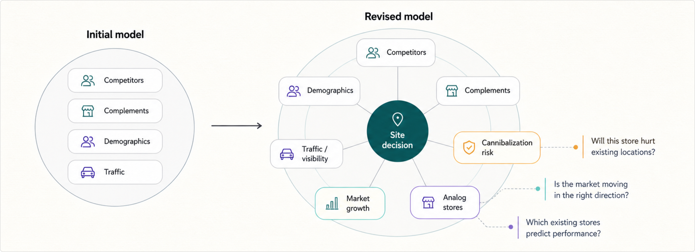
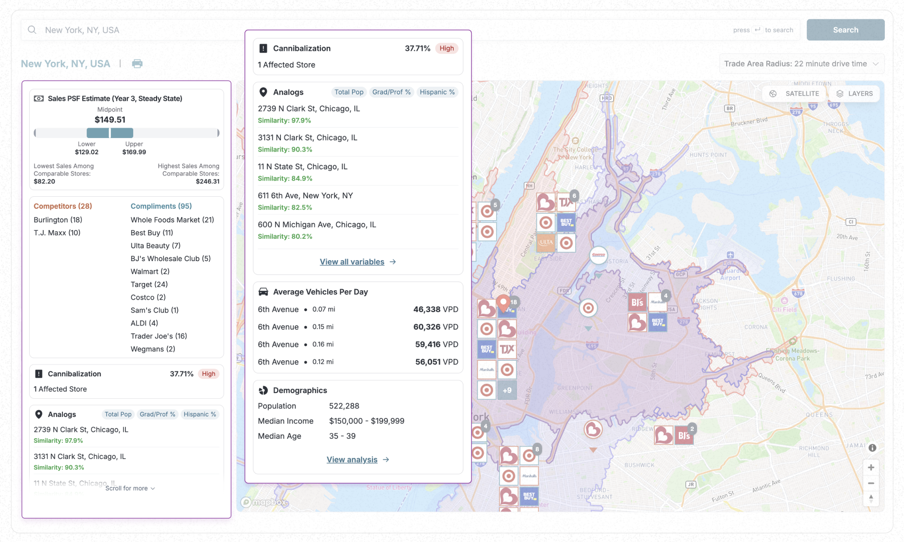
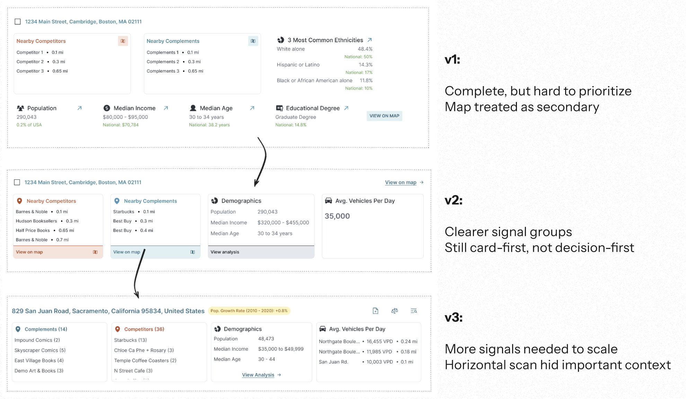
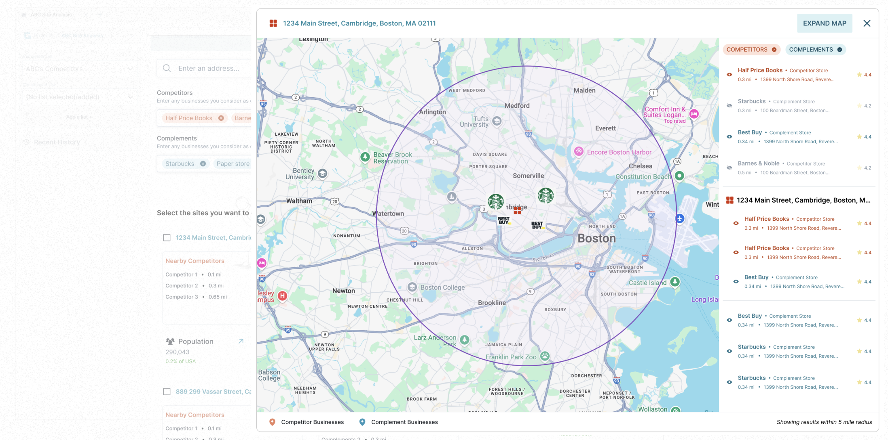

GrowthFactor — Case Study
Accelerate Retail Location Evaluation: From 6 hours to < 1 minute
From gut-feel spreadsheets to a repeatable decision system.
RoleFounding Designer
Timeline2024–2025
WithReal Estate Managers, VPs of Real Estate, CPO, CEO, Engineers
Problem Statement
Retailers struggled with slow, manual site selection processes and lacked a unified tool to make data-driven expansion decisions.
What I Did
I led user interviews, sketched the first wireframes, and owned the information architecture from the ground up.
Fig: Final design I shipped
01Value Delivered
From Manual to Repeatable
The product turned a slow workflow into a system teams could trust and reuse.
GrowthFactor reduced the work of evaluating a retail site from a multi-hour research process into a focused workflow analysts could repeat across hundreds of addresses.
Across 30+ customers and 5,000+ analyzed sites, the biggest shift was behavioral: teams no longer had to start with scattered tools, export-heavy research, or manual comparison before deciding whether a location deserved deeper investigation.
4x
Increase in address search capacity
95%
Reduction in site evaluation time
1
Source for accessible location data
180+
Store openings supported in 6 months
02Why It Matters
Where Not to Go Matters as Much as Where to Go
Retail expansion is a filtering problem before it's a discovery problem.
Imagine you are deciding the next location for a growing restaurant chain. A promising address is not enough; you need to understand demand, saturation, nearby competitors, complementary anchors, traffic, and whether a new store could hurt existing locations.
GrowthFactor helped retail teams evaluate those signals in one place, so the product could support the first decision in the workflow: should this site move forward or be ruled out early?

Fig: Final map-first evaluation experience for understanding where to go and where not to go
03Challenge
Product Skills, Missing Context
I had the design experience, not the retail real estate domain knowledge.
Coming from a CS background, I had to quickly build domain fluency in how real estate teams evaluate trade areas, competitors, and site quality.
To close that gap, I simulated the workflow myself before turning research into product structure.
04Research
From Showing Data to Structuring Decisions
Research reframed the problem: less about displaying signals, more about sequencing them.
My initial model was straightforward: competitors, complements, demographics, and traffic. User interviews revealed that the decision was more nuanced, with signals like cannibalization risk, market growth, and analog stores shaping whether a site felt viable.
That changed the product direction. Instead of treating every data point as an equal card, I started designing around how signals relate to a site decision and when each signal should appear.

Fig: My mental model before and after user interviews
05IA & Design
One Path, Not Four Dashboards
The core problem was unifying fragmented signals into a single evaluation flow.
Users needed complements, competitors, demographics, visibility, traffic, analogs, and cannibalization risk without jumping across tools or manually comparing every factor. The interface had to make the site story readable, not just complete.
I organized the experience around progressive disclosure: the map carried spatial context, while the side panel grouped signals so analysts could scan, expand, and compare without losing the location context.

Fig: Expanded side panel organizing the signals users needed for site evaluation
06Iterations
Right Data, Wrong Path
Early versions had the numbers but not a clear route to a decision.
Version 1 was intentionally ugly but functional: it helped us test whether the data set was useful before polishing the interface. The problem was that the map, which gave users the fastest sense of place, was treated as secondary.
As I iterated, I grouped the signals more clearly, reduced the number of jumps required to understand a site, and eventually moved toward a map-first decision flow where cards supported the spatial story instead of competing with it.

Fig: Iterations from complete-but-hard-to-prioritize cards toward clearer signal grouping
07Final Designs
Matching How Teams Actually Decide
The final flow mirrored the real evaluation process retail teams already used.
The final design made the map the primary workspace and used the side panel as the decision layer. Analysts could search a market, inspect trade areas, compare nearby competitors and complements, and evaluate risk without leaving the main context.
This was the core product shift: from a dashboard that displayed everything to a workflow that helped users decide what mattered next.

Fig: Early functional version that helped validate map-based site evaluation
Fig: Final version with map-first evaluation and richer decision signals
08Reflection
Speed Only Works With Trust
Fast answers don't matter if users don't trust the path that produced them.
If I did it again, I would spend more time observing users inside their existing evaluation workflow before designing the first version.
I would also involve engineering earlier, because the best product decisions came from balancing user needs with what could be built reliably.